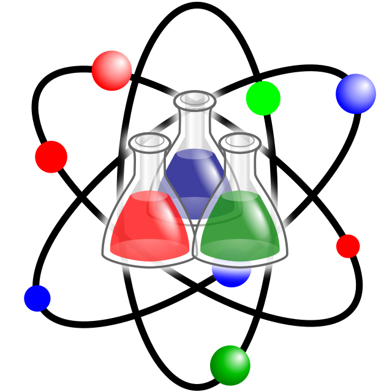
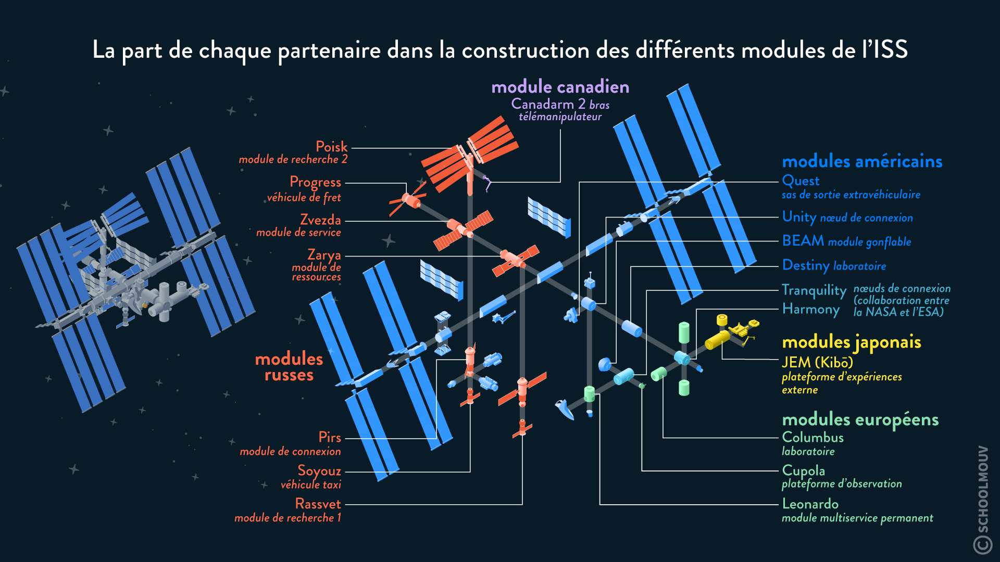

Les enjeux scientifiques de l'ISS

En effet, l'ISS a été conçu pour mener des expériences dans l'espace, donc, la station spatial internationale est munie de 6 laboratoires d'études ou de large sujets d'étude scientifiques
sont traités.
Mais quels sont donc les enjeux scientifiques de l'ISS ? 🤔
Les recherches
Étude des effets de la microgravité
L'ISS permet de comprendre comment le corps humain réagit à de longues périodes en microgravité. Cela inclut l'étude de la perte de densité osseuse, de la perte de masse musculaire,
des changements cardiovasculaires et d'autres effets sur la santé. Ces recherches sont essentielles pour la préparation des futures missions spatiales lointaines, telles que les voyages
vers Mars.
Biologie spatiale
L'ISS offre un environnement pour étudier comment la microgravité affecte la biologie, y compris la croissance des cellules, des tissus et des organismes entiers. Ces études peuvent
avoir des implications dans le domaine de la médecine et de la recherche sur les maladies.
Étude de la physique fondamentale
L'ISS permet la réalisation d'expériences de physique fondamentale dans des conditions de microgravité, où les forces gravitationnelles sont très faibles. Cela inclut la recherche sur
la matière condensée, les fluides, la thermodynamique, et d'autres domaines de la physique.
Astronomie et astrophysique
L'ISS est équipée de télescopes et d'instruments scientifiques pour observer l'Univers dans des longueurs d'onde qui sont filtrées par l'atmosphère terrestre. Cela permet d'étudier des phénomènes
astronomiques, tels que les étoiles, les galaxies, les trous noirs et les rayons cosmiques, avec une grande précision.
Recherche en sciences de la Terre
L'ISS permet de surveiller la Terre depuis l'espace, ce qui est essentiel pour l'étude du changement climatique, des phénomènes météorologiques, de la déforestation, de la pollution
et d'autres problèmes environnementaux. Météorologie spatiale : L'ISS offre une plateforme pour l'étude des phénomènes spatiaux tels que les éruptions solaires, les tempêtes magnétiques
et les radiations cosmiques. Comprendre ces phénomènes est essentiel pour protéger les astronautes et les satellites en orbite.
Technologies spatiales
L'ISS sert également de banc d'essai pour le développement et la validation de nouvelles technologies spatiales, de systèmes de survie aux innovations en matière de propulsion et de
télécommunications.
Les enjeux
En somme, l'ISS joue un rôle essentiel dans la compréhension des effets de l'espace sur le corps humain, dans l'exploration des sciences fondamentales, et dans l'étude de notre planète et de l'Univers.
Elle sert également de laboratoire pour développer des technologies et renforce la coopération internationale dans le domaine spatial.
Pourtant selon une majorité, les résultats scientifiques obtenus par l'ISS ne justifient pas le coût de l'ISS qui représente un gouffre financier.
